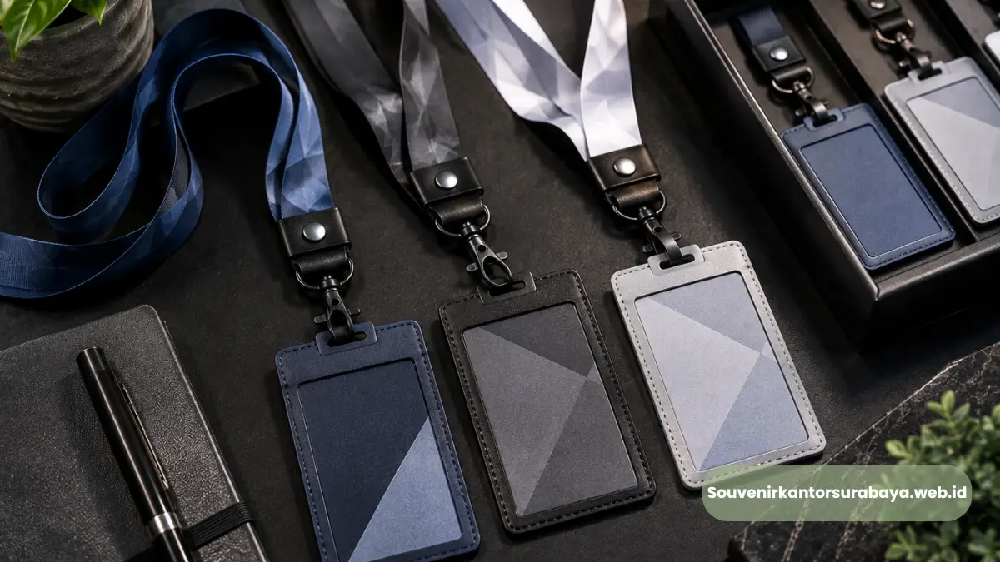

Lanyard custom seminar kantor Surabaya adalah tali gantungan id card bercetak logo dan warna sesuai identitas perusahaan, yang digunakan peserta selama acara seminar atau workshop berlangsung.
Lanyard ini menjadi salah satu perlengkapan wajib yang paling sering dipesan panitia acara kantor untuk mendukung kelancaran registrasi peserta.
Kebutuhan ini semakin meningkat seiring banyaknya seminar dan pelatihan korporat yang digelar instansi maupun perusahaan swasta di Surabaya.
- Lanyard custom digunakan sebagai gantungan id card peserta seminar
- Desain lanyard dapat disesuaikan dengan logo dan warna perusahaan
- Bahan lanyard umumnya polyester dengan pilihan jenis gantungan
- Pemesanan lanyard custom sebaiknya dilakukan jauh sebelum hari acara
- souvenirkantorsurabaya.web.id melayani cetak lanyard custom untuk kebutuhan seminar kantor
Apa Fungsi Lanyard Custom pada Seminar Kantor?
Fungsi utama lanyard custom pada seminar kantor adalah sebagai media gantungan id card yang memudahkan peserta mengenakan identitas selama acara berlangsung.
Selain fungsi praktis tersebut, lanyard juga membantu panitia membedakan kategori peserta melalui warna atau desain yang berbeda, misalnya antara peserta umum, pembicara, dan panitia.
Lanyard yang dicetak dengan logo perusahaan turut memperkuat kesan profesional acara di mata tamu undangan maupun mitra bisnis yang hadir.
Detail kecil seperti ini seringkali menjadi nilai tambah yang membuat acara terlihat lebih terorganisir.
Bagaimana Lanyard Membantu Proses Registrasi Peserta?
Lanyard membantu proses registrasi peserta dengan memberikan tanda visual yang mudah dikenali panitia di pintu masuk atau area registrasi.
Peserta yang telah mengenakan lanyard dapat langsung diarahkan menuju ruang acara tanpa perlu verifikasi berulang, sehingga alur registrasi berjalan lebih cepat terutama pada acara dengan jumlah peserta besar.

Lanyard dan id card custom logo membantu mempercepat proses registrasi dan memperkuat identitas peserta selama acara berlangsung.
Bahan Apa yang Digunakan untuk Lanyard Seminar?
Bahan yang umum digunakan untuk lanyard seminar adalah polyester karena memiliki tekstur yang kuat, nyaman dipakai, dan mudah dicetak dengan berbagai warna maupun desain logo.
Selain polyester, terdapat pula pilihan bahan lain seperti nylon yang lebih tebal untuk kebutuhan acara dengan durasi pemakaian lebih lama.
Jenis gantungan lanyard juga bervariasi, mulai dari hook buaya, kait metal, hingga kait plastik, yang dapat disesuaikan dengan preferensi panitia dan tingkat keamanan yang dibutuhkan selama acara berlangsung.
Baca Juga
Apa Perbedaan Lanyard Sablon dan Lanyard Cetak Digital?
Perbedaan lanyard sablon dan lanyard cetak digital terletak pada teknik pewarnaan dan detail desain yang dihasilkan.
Lanyard sablon umumnya digunakan untuk desain sederhana dengan warna terbatas, sedangkan lanyard cetak digital mampu menghasilkan detail logo dan gradasi warna yang lebih kompleks sesuai kebutuhan branding acara.
Bagaimana Proses Pemesanan Lanyard Custom?
Proses pemesanan lanyard custom dimulai dari konsultasi kebutuhan desain, pengiriman file logo perusahaan, konfirmasi jumlah pesanan, hingga proses produksi dan pengecekan hasil cetak sebelum dikirim ke lokasi acara.
Panitia disarankan menyiapkan file logo dengan resolusi baik agar hasil cetak lanyard terlihat tajam dan rapi.
Setelah desain disetujui, waktu produksi lanyard custom umumnya membutuhkan beberapa hari kerja tergantung jumlah unit yang dipesan.
Oleh karena itu, pemesanan sebaiknya dilakukan dengan mempertimbangkan tenggat waktu acara agar seluruh proses berjalan lancar tanpa terburu-buru.
Bagi perusahaan atau instansi di Surabaya yang membutuhkan lanyard custom untuk seminar mendatang, souvenirkantorsurabaya.web.id menyediakan layanan cetak lanyard dengan desain sesuai identitas perusahaan Anda.
Konsultasikan kebutuhan lanyard acara Anda melalui souvenirkantorsurabaya.web.id agar seluruh persiapan berjalan tepat waktu.
Lanyard custom menjadi salah satu perlengkapan penting yang mendukung kelancaran registrasi dan memperkuat identitas acara seminar kantor.
Dengan pemilihan bahan yang tepat dan desain yang sesuai identitas perusahaan, lanyard mampu memberikan kesan profesional bagi peserta maupun tamu undangan.
Percayakan kebutuhan lanyard custom seminar kantor Surabaya Anda kepada souvenirkantorsurabaya.web.id.

Hawa Nadira
Tim penulis CorporateGifts ID berfokus pada strategi souvenir kantor, merchandise korporat, dan inovasi brand untuk klien B2B.
Keahlian: Branding perusahaan, produksi souvenir, paket event, desain materi promosi.
Artikel Terkait

Perlengkapan Seminar Bisnis Surabaya: Solusi Lengkap untuk Acara Kantor Anda
Perlengkapan seminar bisnis Surabaya mencakup lanyard, id card, seminar kit, dan aksesori pendukung acara kantor.
Baca Selengkapnya
Souvenir Kantor untuk Event Korporat Surabaya yang Elegan dan Siap Pakai
Souvenir kantor untuk event korporat Surabaya adalah merchandise yang disiapkan khusus untuk mendukung acara bisnis seperti seminar dan gathering.
Baca SelengkapnyaSouvenir Kantor Custom Logo Surabaya untuk Memperkuat Identitas Brand
Custom logo pada souvenir kantor menjadi salah satu cara paling efektif untuk memperluas eksposur brand secara berkelanjutan.
Baca Selengkapnya